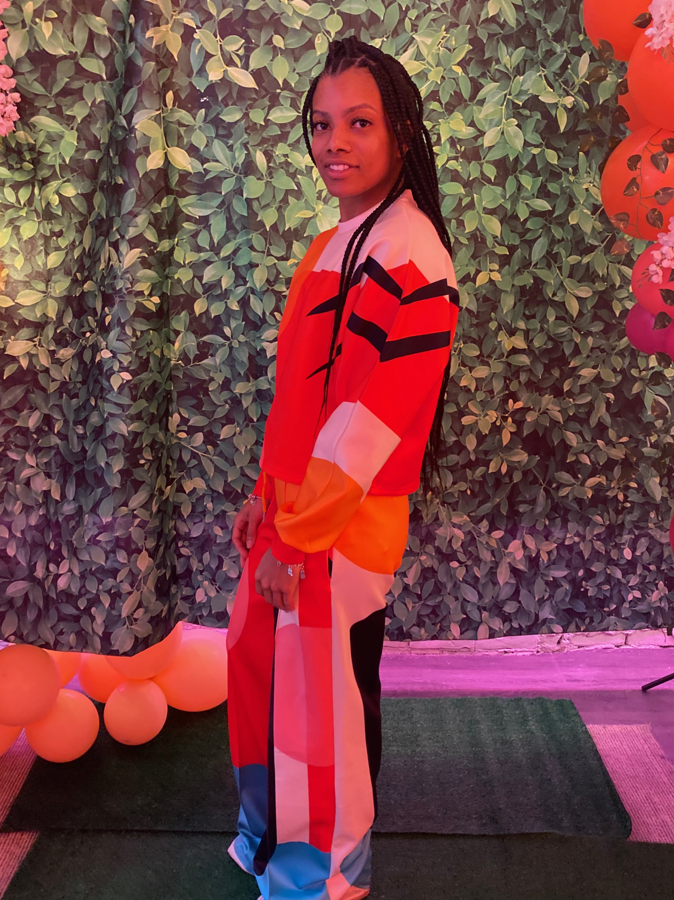

Jobs
education
Domynique V. Shelby

Me at the spring equinox fashion show
- 1993-Born in Celveland, OH
- 2000-Graduated from Kindergraden
- 2012-Won State Championship
- 2012-Graduated High School
- 2017-Graduated College
- 2018-Bought my first car
- 2020-Started a business
- Started Web Development at Kable Academy
My Linkdin page